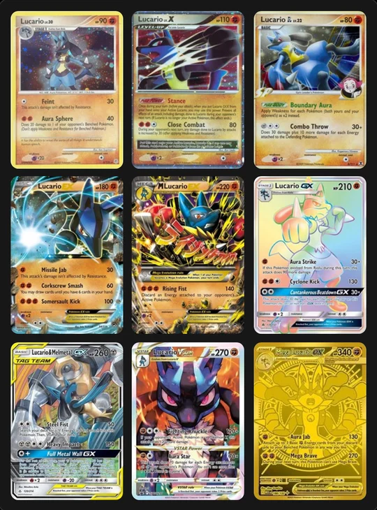

Pokémon binder page
The Lucario binder page

The page, pocket by pocket
Read it like a book: the top row runs from 2007 to 2009, the middle row from 2014 to 2018, and the bottom row from 2019 to today.
| Card | Set | Year | |
|---|---|---|---|
| 1 | Lucario, holo, 6 of 130 | Diamond & Pearl | 2007 |
| 2 | Lucario LV.X, 122 of 123 | Mysterious Treasures | 2007 |
| 3 | Lucario GL, 8 of 111 | Rising Rivals | 2009 |
| 4 | Lucario-EX | Furious Fists | 2014 |
| 5 | M Lucario-EX | Furious Fists | 2014 |
| 6 | Lucario GX, rainbow | Forbidden Light | 2018 |
| 7 | Lucario & Melmetal GX | Unbroken Bonds | 2019 |
| 8 | Lucario VSTAR, full-art promo | Sword & Shield promos | 2023 |
| 9 | Mega Lucario ex, gold | Mega Evolution | 2025 |
One pocket that breaks the pattern
Pocket seven is Lucario & Melmetal GX from Unbroken Bonds: a tag team card, so Lucario shares it with Melmetal. It is the only pocket where Lucario is not alone on the card, and it bridges the GX row to the VSTAR and Mega cards that follow.
Three layouts, compared
1. Oldest to newest. The page pictured above. One Lucario per era, read like a timeline.
2. Riolu to Lucario. Lucario evolves from Riolu. Put three Riolus in the top row and six Lucarios below, or pair each Riolu with the Lucario from the same set, so every row shows the evolution.
3. Sinnoh's seventh page. In a Pokédex binder that starts each region on a fresh page, Sinnoh's 107 Pokémon fill 12 pages. Lucario is number 448, so it lands in pocket eight of page seven, right after Riolu and on the same page as the Gible line.
Sinnoh's seventh page: Lucario in pocket eight.
| Layout | Pages | Best for |
|---|---|---|
| Oldest to newest | 1 | Lucario's whole history at a glance |
| Riolu to Lucario | 1 | Showing the evolution on every row |
| Sinnoh's seventh page | 1 | A Pokédex binder in number order |
Try it before you sleeve
Moving nine cards around a real page is slow, and every move risks a scuff. Try the order on screen first, as many times as you like.
- Open the free page builder. No account needed.
- Type Lucario. The builder lists Lucario cards with the set each one comes from. Add a word from the set name, such as Lucario Diamond, to see only that set's cards.
- Tap one card for each pocket, oldest first. Pockets fill in the order you tap.
- Tap See page. Tap a card to take it out, then add another, until the page looks right.
- Keep the page with a free account, then sleeve the real cards in the same order.
Questions
How many Lucario cards are there?
Dozens, once promos, starter sets and every version count. That is far too many for one page, so a Lucario page is a choice of nine: one per era, one per card type or your nine favourite drawings.
Which Lucario starts the page?
The holo Lucario from Diamond & Pearl, 2007, card 6 of 130.
Which Lucario ends the page?
Mega Lucario ex from the Mega Evolution set, 2025, here in its gold print.
Where does Lucario go in a Pokédex binder?
Lucario is number 448. If Sinnoh starts on a fresh page, its 107 Pokémon fill 12 pages, and Lucario lands in pocket eight of page seven, right after Riolu and on the same page as Gible, Gabite and Garchomp.
Is the page builder free?
Yes. Planning a page needs no account. Keeping it makes a free account, which never asks for payment details.
More guides: Binder theme ideas · Pokédex binder · Mewtwo page · Gengar page · Charizard page · Binder page planner
Pokémon is a trademark of its owners. Beltstra is an independent app and is not affiliated with or endorsed by them.